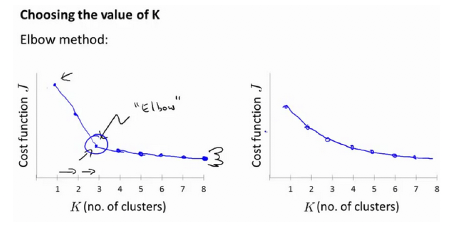
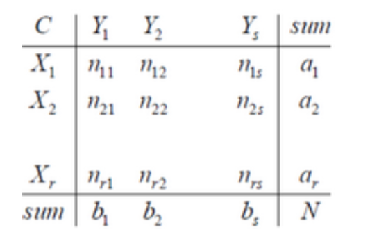

无监督学习
无监督学习（Unsupervised Lear{ {ning），顾名思义，就是不受监督的学习，一种自由的学习方式。该学习方式不需要先验知识进行指导，而是不断地自我认知，自我巩固，最后进行自我归纳，在机器学习中，无监督学习可以被简单理解为不为训练集提供对应的类别标识（label），其与有监督学习的对比如下：
有监督学习（Supervised Learning）下的训练集：$ (x^{(1)}, y^{(1)}), (x^{(2)}, y^{2})$
无监督学习（Unsupervised Learning）下的训练集：
$(x^{(1)}), (x^{(2)}), (x^{(3)})$
聚类
在有监督学习中，我们把对样本进行分类的过程称之为分类（Classification），而在无监督学习中，我们将物体被划分到不同集合的过程称之为聚类（Clustering）。聚这个动词十分精确，他传神地描绘了各个物体自主地想属于自己的集合靠拢的过程。
在聚类中，我们把物体所在的集合称之为簇（cluster）。
K-均值算法 K-Means Algorithm
K-均值是最普及的聚类算法，算法接受一个未标记的数据集，然后将数据聚类成不同的组。
K-均值是一个迭代算法，假设我们想要将数据聚类成n个组，其方法为:
首先选择$K$个随机的点，称为聚类中心（cluster centroids）；
对于数据集中的每一个数据，按照距离$K$个中心点的距离，将其与距离最近的中心点关联起来，与同一个中心点关联的所有点聚成一类。
计算每一个组的平均值，将该组所关联的中心点移动到平均值的位置。
重复步骤2-4直至中心点不再变化。
K-Means 的算法步骤能够简单概括为：
- 分配：样本分配到簇。
- 移动：移动聚类中心到簇中样本的平均位置。
- 注意，某些聚类中心可能没有被分配到样本，这样的聚类中心就会被淘汰（意味着最终的类数可能会减少）。
K-均值算法的伪代码如下：
- 假设簇的个数被定为 K ，样本数为 m。
- 随机设定 K个聚类中心：$\mu_1,\mu_2,…,\mu_k \in R^n$
重复如下过程直至聚类中心的位置不再改变
1 | Repeat { |
算法分为两个步骤:
第一个for循环是赋值步骤，即：对于每一个样例$i$，计算其应该属于的类。for $i=1$ to m：
距离的计算式如下：
$\min_k||x^{(i)}-\mu_k||^2$第二个for循环是聚类中心的移动，即：对于每一个类$K$，重新计算该类的质心。
for $k=1$ to $k$:
优化
K-均值最小化问题，是要最小化所有的数据点与其所关联的聚类中心点之间的距离之和，因此
K-均值的代价函数（又称畸变函数 Distortion function）为：
其中${ {\mu }_{ { {c}^{(i)}}}}$代表与${ {x}^{(i)}}$最近的聚类中心点。
我们的的优化目标便是找出使得代价函数最小的 $c^{(1)}$,$c^{(2)}$,…,$c^{(m)}$和$μ^1$,$μ^2$,…,$μ^k$.
回顾刚才给出的:
K-均值迭代算法，我们知道，第一个循环是用于减小$c^{(i)}$引起的代价，而第二个循环则是用于减小${ {\mu }_{i}}$引起的代价。迭代的过程一定会是每一次迭代都在减小代价函数，不然便是出现了错误。
随机初始化
在运行K-均值算法的之前，我们首先要随机初始化所有的聚类中心点，下面介绍怎样做：
我们应该选择$K<m$，即聚类中心点的个数要小于所有训练集实例的数量
随机选择$K$个训练实例，然后令$K$个聚类中心分别与这$K$个训练实例相等
K-均值的一个问题在于，它有可能会停留在一个局部最小值处，而这取决于初始化的情况。
为了解决这个问题，我们通常需要多次运行K-均值算法，每一次都重新进行随机初始化，最后再比较多次运行K-均值的结果，选择代价函数最小的结果。这种方法在$K$较小的时候（2—10）还是可行的，但是如果$K$较大，这么做也可能不会有明显地改善。
选择聚类数
实际上，一开始是很难确定聚类数的，但是，也存在一种称之为肘部法则（Elbow Method）的方法来选定适当的K值：

上图左边曲线类似于人的手肘，“肘关节”部分对应的 $ K$值就是最恰当的 $ K$值，但是并不是所有代价函数曲线都存在明显的“肘关节”，例如上图右边曲线。
一般来说，K-Means 得到的聚类结果是服务于我们的后续目的（如通过聚类进行市场分析），所以不能脱离实际而单纯以数学方法来选择$K$值。
二分K-Means算法
常规的 K-Means 算法的误差通常只能收敛到局部最小，在此，引入一种称为二分 K-Means（bisecting kmeans）的算法，相较于常规的 K-Means，二分 K-Means 不是一来就随机 $K$个聚类中心，而是首先把所有点归为一个簇，然后将该簇一分为二。计算各个所得簇的失真函数（即误差），选择误差最大的簇再进行划分（即最大程度地减少误差），重复该过程直至达到期望的簇数目。
二分 KMeans 算法流程大致如下：
- 初始时，所有样本被看做在同一个簇：
$c^{(1)}=c^{(2)}=...=c^{(m)}$ - While $num<k$ （$num$表示当前的簇数）:
for $i = 1$ to $num$:
- 计算误差
- 在该簇上进行 K-Means 聚类，其中 k=2
- 计算将该簇一分为二后的总误差，该误差在之后将会被用于比较
- 选择使得总误差最小的簇进行划分
虽然二分 K-Means 能带来全局最优解，但是我们也可以看到，该算法是一个贪心算法，因此计算量不小。
聚类参考资料
1.相似度/距离计算方法总结
(1). 闵可夫斯基距离Minkowski/（其中欧式距离：$p=2$)
$dist(X,Y)={ {\left( { {\sum\limits_{i=1}^{n}{\left| { {x}_{i}}-{ {y}_{i}} \right|}}^{p}} \right)}^{\frac{1}{p}}}$
(2). 杰卡德相似系数(Jaccard)：
$J(A,B)=\frac{\left| A\cap B \right|}{\left|A\cup B \right|}$
(3). 余弦相似度(cosine similarity)：
$n$维向量$x$和$y$的夹角记做$\theta$，根据余弦定理，其余弦值为：
$cos (\theta )=\frac{ { {x}^{T}}y}{\left|x \right|\cdot \left| y \right|}=\frac{\sum\limits_{i=1}^{n}{ { {x}_{i}}{ {y}_{i}}}}{\sqrt{\sum\limits_{i=1}^{n}{ { {x}_{i}}^{2}}}\sqrt{\sum\limits_{i=1}^{n}{ { {y}_{i}}^{2}}}}$
(4). Pearson皮尔逊相关系数：
${ {\rho }_{XY}}=\frac{\operatorname{cov}(X,Y)}{ { {\sigma }_{X}}{ {\sigma }_{Y}}}=\frac{E[(X-{ {\mu }_{X}})(Y-{ {\mu }_{Y}})]}{ { {\sigma }_{X}}{ {\sigma }_{Y}}}=\frac{\sum\limits_{i=1}^{n}{(x-{ {\mu }_{X}})(y-{ {\mu }_{Y}})}}{\sqrt{\sum\limits_{i=1}^{n}{ { {(x-{ {\mu }_{X}})}^{2}}}}\sqrt{\sum\limits_{i=1}^{n}{ { {(y-{ {\mu }_{Y}})}^{2}}}}}$
Pearson相关系数即将$x$、$y$坐标向量各自平移到原点后的夹角余弦。
2.聚类的衡量指标
(1). 均一性：$p$
类似于精确率，一个簇中只包含一个类别的样本，则满足均一性。其实也可以认为就是正确率(每个 聚簇中正确分类的样本数占该聚簇总样本数的比例和)
(2). 完整性：$r$
类似于召回率，同类别样本被归类到相同簇中，则满足完整性;每个聚簇中正确分类的样本数占该
类型的总样本数比例的和
(3). V-measure:
均一性和完整性的加权平均
$V = \frac{(1+\beta^2)pr}{\beta^2p+r}$
(4). 轮廓系数
样本$i$的轮廓系数：$s(i)$
簇内不相似度:计算样本$i$到同簇其它样本的平均距离为$a(i)$，应尽可能小。
簇间不相似度:计算样本$i$到其它簇$C_j$的所有样本的平均距离$b_{ij}$，应尽可能大。
轮廓系数：$s(i)$值越接近1表示样本$i$聚类越合理，越接近-1，表示样本$i$应该分类到 另外的簇中，近似为0，表示样本$i$应该在边界上;所有样本的$s(i)$的均值被成为聚类结果的轮廓系数。
$s(i) = \frac{b(i)-a(i)}{max\{a(i),b(i)\}}$
(5). ARI
数据集$S$共有$N$个元素， 两个聚类结果分别是：
$X=\{ { {X}_{1}},{ {X}_{2}},…,{ {X}_{r}}\},Y=\{ { {Y}_{1}},{ {Y}_{2}},…,{ {Y}_{s}}\}$
$X$和$Y$的元素个数为：
$a=\{ { {a}_{1}},{ {a}_{2}},…,{ {a}_{r}}\},b=\{ { {b}_{1}},{ {b}_{2}},…,{ {b}_{s}}\}$

记：${ {n}_{ij}}=\left| { {X}_{i}}\cap { {Y}_{i}} \right|$
$ARI=\frac{\sum\limits_{i,j}{C_{ { {n}_{ij}}}^{2}}-\left[ \left( \sum\limits_{i}{C_{ { {a}_{i}}}^{2}} \right)\cdot \left( \sum\limits_{i}{C_{ { {b}_{i}}}^{2}} \right) \right]/C_{n}^{2}}{\frac{1}{2}\left[ \left( \sum\limits_{i}{C_{ { {a}_{i}}}^{2}} \right)+\left( \sum\limits_{i}{C_{ { {b}_{i}}}^{2}} \right) \right]-\left[ \left( \sum\limits_{i}{C_{ { {a}_{i}}}^{2}} \right)\cdot \left( \sum\limits_{i}{C_{ { {b}_{i}}}^{2}} \right) \right]/C_{n}^{2}}$